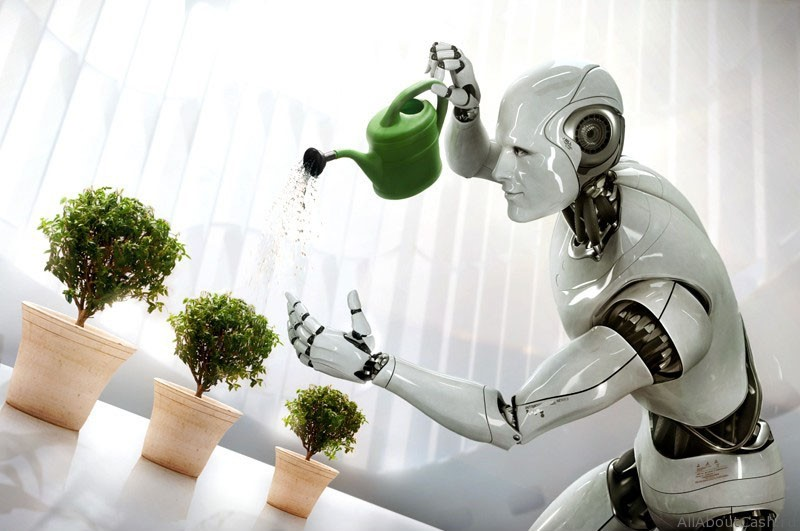
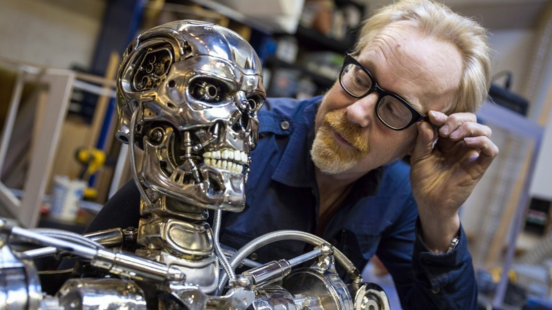

Робототехніка досягла величезних успіхів за останні роки, але у машин залишається безліч перешкод перед тим, щоб повсюдно увійти в наше життя. Журнал Science Robotics визначив десять грандіозних завдань, які потрібно вирішити, щоб це стало реальністю. Редактори журналу провели онлайн-опитування по невирішених проблемах в робототехніці і опитали групу експертів галузі.
Робототехніки починають відходити від звичних двигунів, шестерень і датчиків, експериментуючи з такими елементами, як штучні м’язи, м’яка робототехніка і нові методи складання, які поєднують безліч функцій в одному матеріалі. Але більшість зі списку цих досягнень поки не пройшли стадію демонстрації, а про об’єднання і взагалі рано говорити. Багатофункціональні матеріали об’єднують сенсори, рух, збирання енергії або її збереження і дозволяють проектувати більш ефективних роботів. Але поєднання цих властивостей в одній машині вимагатиме нових підходів, що поєднують мікро – і макромасштабні техніки збирання. Ще одним перспективним напрямком стали матеріали, які можуть змінюватись з часом, адаптуючись або відновлюючись, але в цій сфері потрібно набагато більше досліджень.

Природа вже вирішила безліч проблем, над якими ламають голову робототехніки, тому багато з них звернулись до біології в пошуках натхнення або навіть включають живі системи у своїх роботів. Однак відтворення механічної продуктивності м’язів і здатності біологічних систем самостійно себе живити зіштовхується з «вузькими» місцями в розробці.Сфера штучних м’язів вже показала значний прогрес, але їх міцність, ефективність, щільність енергії та потужності вимагають подальшого покращення. Впровадження живих клітин в роботів може подолати труднощі, пов’язані з використанням невеликих роботів, а також використовувати біологічні функції, такі як самовідновлення і вбудоване сприйняття, але впровадження таких компонентів — складне завдання. І хоча зростаючий «робозоопарк» допомагає нам вивчати секрети природи, необхідно провести більше роботи над тим, як тварини здійснили перехід від чистого польоту і плавання до мультимодальних платформ.
Зберігання енергії — серйозний камінь спотикання для мобільної робототехніки. Зростаючий попит на дронів , електромобілі і поновлювану енергію підштовхує прогрес у сфері батарей, але фундаментальні проблеми залишаються здебільшого незмінними довгі роки. З цього випливає, що паралельно з розвитком батарей є необхідність мінімізації споживання енергії роботами і оснащення їх новими джерелами енергії. Дати роботам можливість використовувати енергію навколишнього середовища і передавати їм енергію бездротовим шляхом — ці два перспективних підходи в даний час активно вивчаються.
Основні проблеми включають створення систем, які можуть адаптуватись, вчитись і відновлюватись після збоїв у навігації, а також здатні робити і розпізнавати нові відкриття. Це вимагає автономії високого рівня, яка дозволить роботам відстежувати і переналаштовувати самих себе, створювати картину світу з декількох джерел даних різної надійності і точності.
Глибоке навчання дало машинам можливість розпізнавати закономірності та схеми на новому рівні, але його потрібно зв’язати з модельованими мисленням для створення роботів, що адаптуютья, які зможуть вчитися «на льоту». Ключем до цього буде створення штучного інтелекту, який усвідомлює свої власні обмеження і може навчатися вивченню нових речей. Також важливо створити системи, які можуть швидко навчатися на основі обмежених даних, а не на мільйонах прикладів, які використовуються в глибокому навчанні. Подальші успіхи в нашому розумінні людського інтелекту також будуть необхідні для вирішення цих проблем.
Нейрокомп’ютерні інтерфейси дозволять непомітно керувати розвиненими роботизованими протезами, а також забезпечать швидший і більш природний спосіб передавати інструкції роботам або просто допоможуть їм розуміти психічний стан людини. Більшість сучасних підходів до вимірювання активності мозку дорогі і незграбні, тому ми потребуємо розробки компактних, ергономічних і бездротових пристроїв. Вони повинні включати розширене навчання, калібрування та адаптацію. Крім того, ще належить побачити, чи зможуть вони спрацювати краще, ніж прості техніки типу відстеження руху очей або зчитування м’язових сигналів.
Медицина — одна зі сфер, на яку роботи зможуть істотно вплинути вже в найближчому майбутньому. Пристрої, які доповнюють можливості хірурга, вже використовуються на повсякденній основі, але дати їм повну автономію ми поки не можемо через високі ставки і ризик.Автономним асистентам-роботам необхідно буде навчитися розпізнавати людську анатомію в різних контекстах і використовувати ситуативну обізнаність і голосові команди для розуміння того, що від них вимагається. В хірургії автономні роботи можуть виконувати звичайні операції, звільняючи хірурга для більш тонкої і важливої роботи.Мікроботи, що працюють в людському тілі, теж багатообіцяючі, але знаходяться в зародковій стадії свого розвитку.